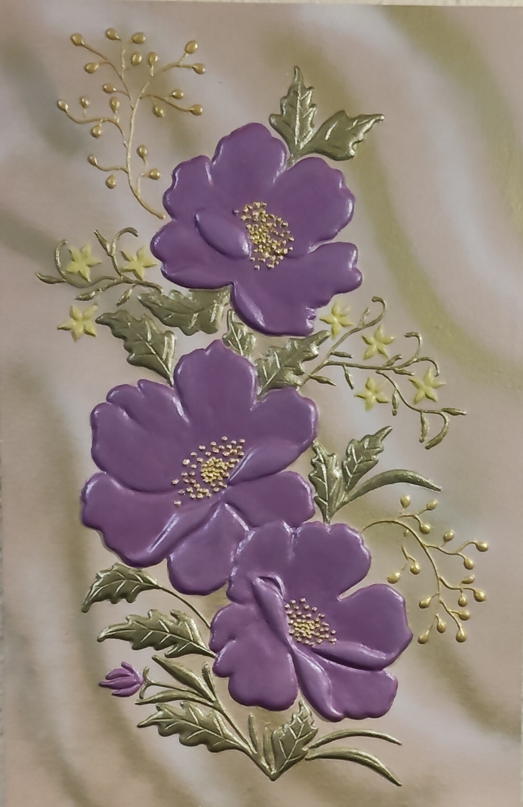

NICOLETA FILIP ART
ROSA MOSQUETA 1
Composición floral en relieve protagonizada por flores de rosa mosqueta, acompañadas de hojas, capullos y tallos trabajados sobre un fondo claro.
Sobre la obra
ROSA MOSQUETA 1 presenta una composición floral vertical en la que las flores y los elementos vegetales construyen un conjunto de marcado carácter botánico.
Las flores se integran con hojas, capullos y tallos trabajados en relieve, creando diferentes niveles de volumen y textura sobre el soporte.
Presentación artística
La composición destaca por la presencia de flores de rosa mosqueta distribuidas a lo largo de la superficie, acompañadas por elementos vegetales que aportan ritmo y profundidad.
El relieve permite apreciar el volumen de las flores y la textura de las hojas, reforzando el carácter artesanal y tridimensional de la obra.
Ficha técnica
- Año
- 2026
- Dimensiones
- 40 × 60 cm
- Soporte
- Madera
- Técnica
- Técnica estándar.
- Categoría
- Floral
Si deseas recibir información sobre esta obra, puedes solicitarla directamente.
SOLICITAR INFORMACIÓN →